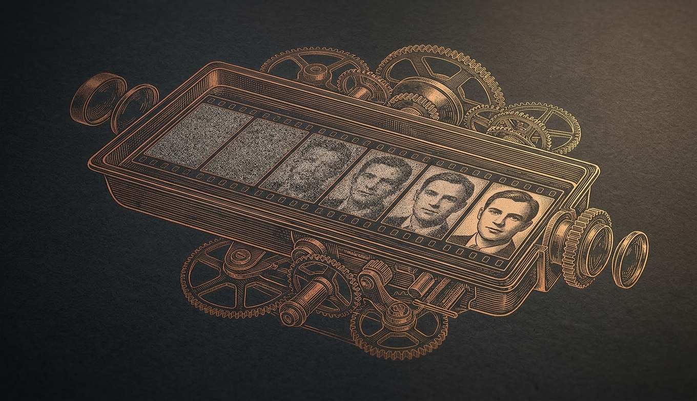
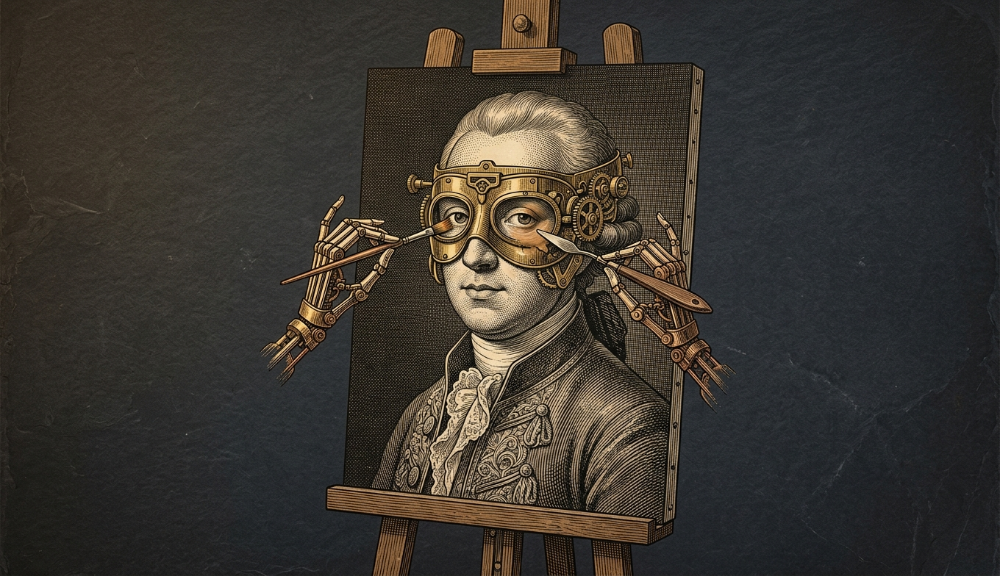
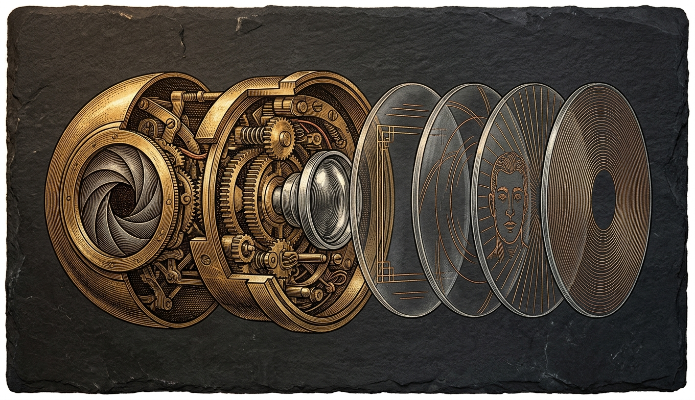
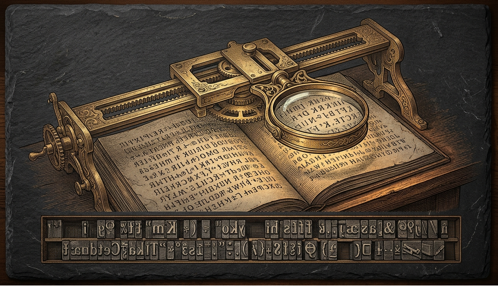
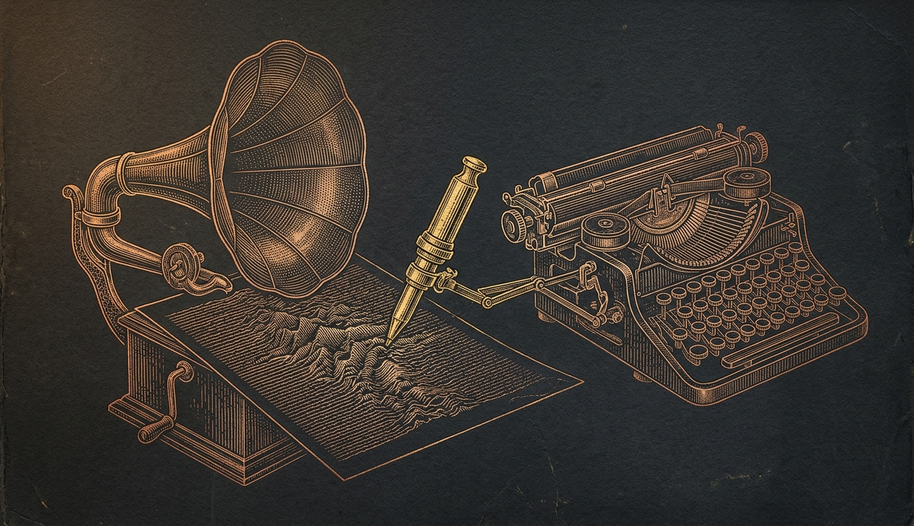
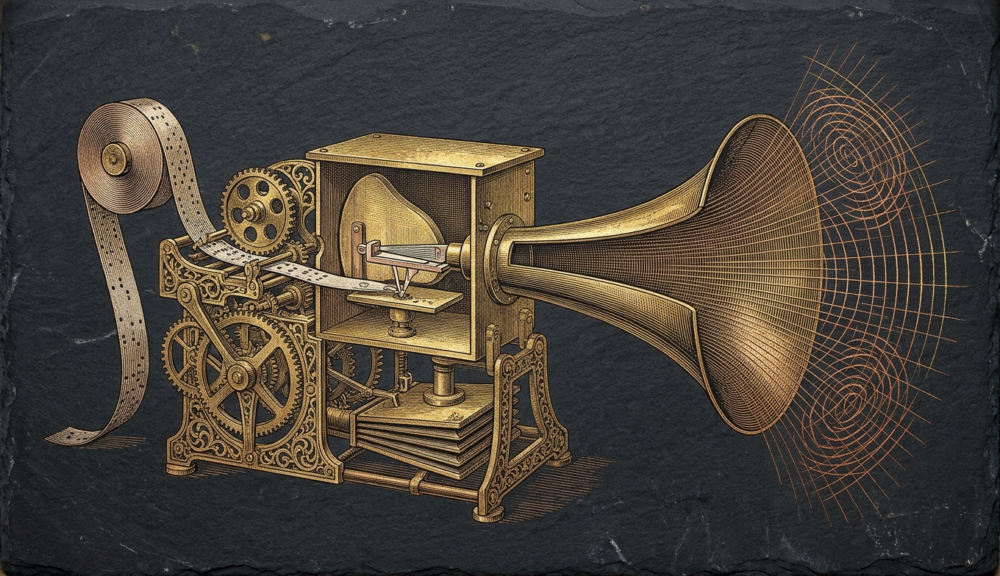
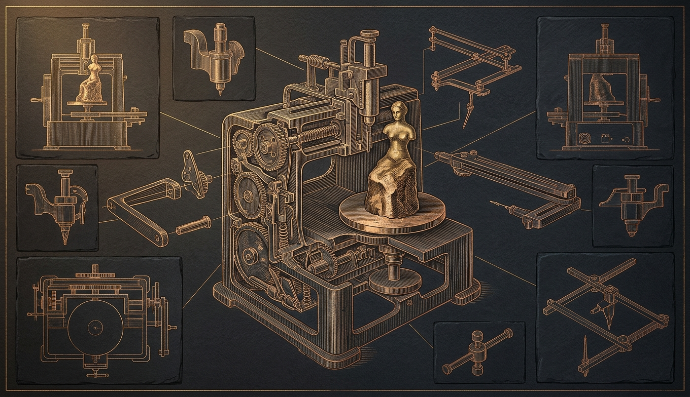
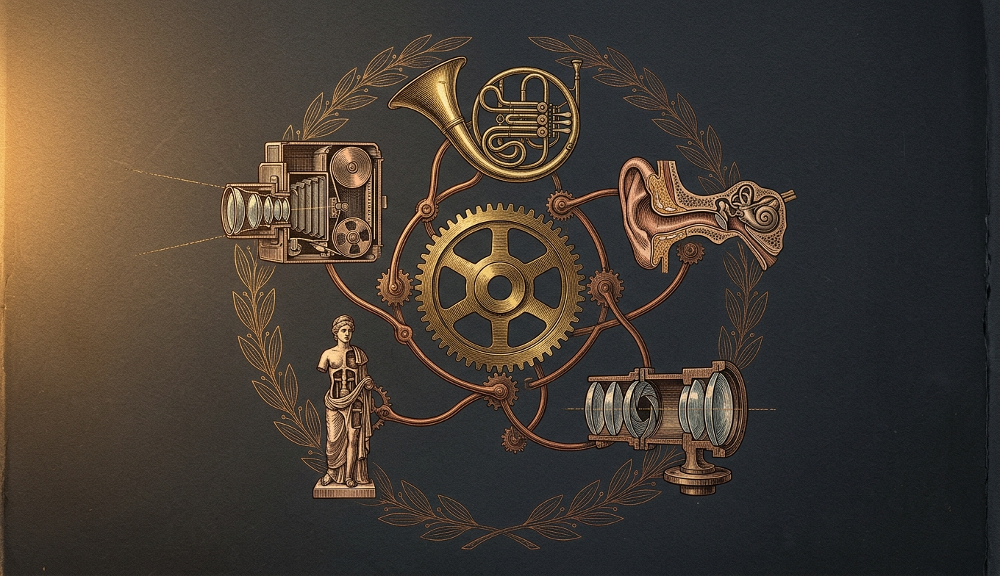
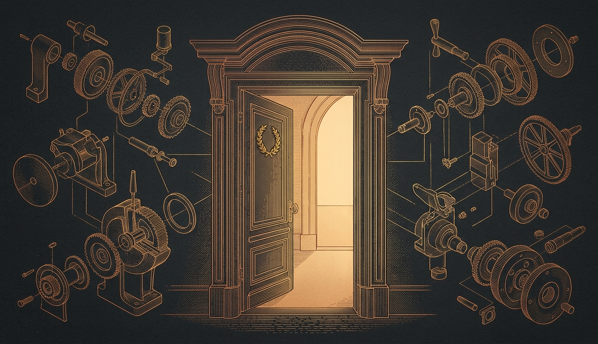

Генератор картинок не рисует. Он учился на одном странном задании: ему показывали фотографию, испорченную шумом, и просили угадать, какой именно шум добавили. Миллиард раз. Потом ему дали чистый телевизионный снег и сказали: убери шум. Он убрал, и на месте снега оказалась картинка, которой никогда не было.

Даёшь фото человека в очках и просишь «то же самое, но без очков». Что делает модель: рисует всё заново или трогает только кусок? Ответ: смотря какая кнопка. Их три, они устроены по-разному, и по результату можно определить, какая была нажата. Опыт в этой главе настоящий, одно лицо, три кнопки.

Сеть не видит кошку. Она видит числа: яркость каждого пикселя. Чтобы из чисел получилась «кошка», нужно пройти десяток слоёв, и на каждом картинка становится чуть менее картинкой и чуть более смыслом. Эта глава про то, что происходит на каждом слое и почему кошке можно быть любого размера, повёрнутой и в зеркале.

Тридцать лет чтение текста с картинок было отдельной наукой: найти строки, нарезать на буквы, сравнить с шаблонами. Потом нарезку убрали. Потом убрали и сам модуль: современная модель читает скриншот тем же вниманием, которым читает промпт. Поэтому она читает зеркальные вывески, и поэтому же врёт, когда не уверена: читает не глаз, а словарь.

Распознавание речи - это не про звук. Первым шагом звук превращают в картинку, спектрограмму, и дальше работает глава про зрение плюс часть 1: кодировщик смотрит на картинку, декодер пишет слова, предсказывая следующий токен. Отсюда всё хорошее и всё странное в Whisper: он знает языки, переводит и уверенно галлюцинирует в тишине.

Синтез речи - это распознавание, запущенное задом наперёд: текст в спектрограмму, спектрограмму в волну. Клонирование голоса - референс-картинка из первой главы, только референс звуковой. Музыка - диффузия из первой главы, только снег на спектрограмме целой песни. Новых механизмов в этой главе нет, и это её главный результат.

Последняя игрушка и единственная, где данных по-настоящему мало: фотографий в интернете миллиарды, трёхмерных моделей - миллионы, и то в основном кресла. Поэтому 3D-генерация делает крюк через картинки: сначала диффузия рисует объект с нескольких сторон, потом другая сеть сшивает виды в объём. И поэтому снаряды выходят, а лица нет.

Семь игрушек разобраны до вала. Осталось положить детали в один ряд и посмотреть, сколько их на самом деле. Меньше, чем кажется: три механизма и один магнит. И одна общая слабость, которая на каждом этаже называлась по-своему, а оказалась одним и тем же.

Снег, в котором проявляется картинка. Маска, остаточный шум или внимание, которые держат остальное. Окошко, ищущее штрих, и квадраты, ставшие словами. Словарь, который читает зеркало за глаз. Спектрограмма, которую слушают глазами. Голос как вектор. Шесть видов, сшитых в объём. Вопросы → давайте обсудим.